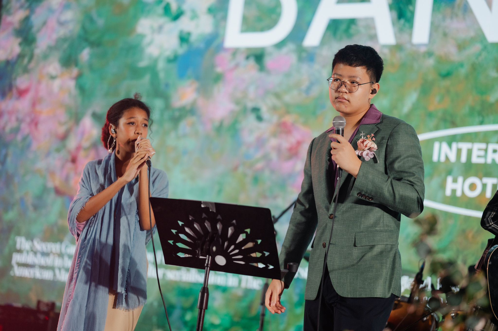

Hello! My name is Namo. I'm Thai-Chinese, and I've lived in Thailand since I was born. I have one older sister and a Yorkshire Terrier. I love playing fantasy football and being perfect because I'm HIM. I was also involved in public speaking and Theater Arts throughout middle school and high school. My favourite sports are badminton and football. Currently, I am a student at an international school called International Community School of Bangkok (ICS).
